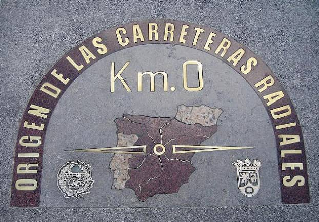
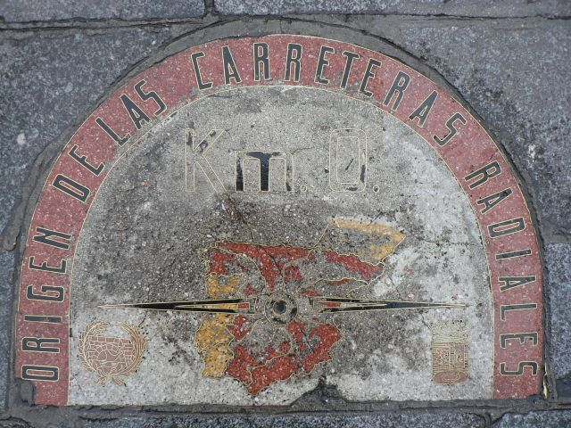
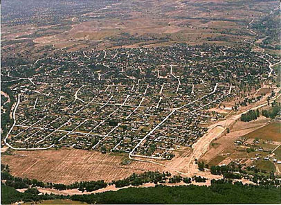

Km. 0La placa del kilómetro 0, situada en frente de la Real Casa de Correos, es el punto desde donde salen las 6 carreteras radiales, que fueron inauguradas en 1720 como caminos por el rey Felipe V.
Estas 6 carreteras aparecen representadas en el mapa que hay en la placa (en el sentido de las agujas del reloj: N-1, N-2, N-3, N-4, N-5 y N-6).
 Placa actual con las 6 carreteras
El resto de carreteras parten de alguna de estas 6 y miden su kilometraje desde el punto en el que se separan, y otras 4 carreteras nacionales (N-111, N-301, N-401 y N-601) miden su kilometraje desde este punto.
La placa fue instalada en el año 1950, y fue reemplazada por la actual en el año 2009 ya que estaba muy desgastada.
 Placa antigua. Foto tomada en 2006
Al contrario de lo que mucha gente piensa, esta placa no es el centro de Madrid ni tampoco de la Península. El centro geográfico de Madrid está situado más al noreste, mientras que el de la Península es complicado.
Históricamente se creyó que la centralidad pertenecía a Pinto o al Cerro de los Ángeles, desde tiempos romanos y musulmanes, respectivamente, y en 1900 se le dio la razón a éste último. Sin embargo, hoy en día, el Instituto Geográfico Nacional defiende que
el centro geográfico de la Península se encuentra cerca de Calalberche, en la provincia de Toledo.
 Calaberche, el sitio más cercano al verdadero centro de la Península